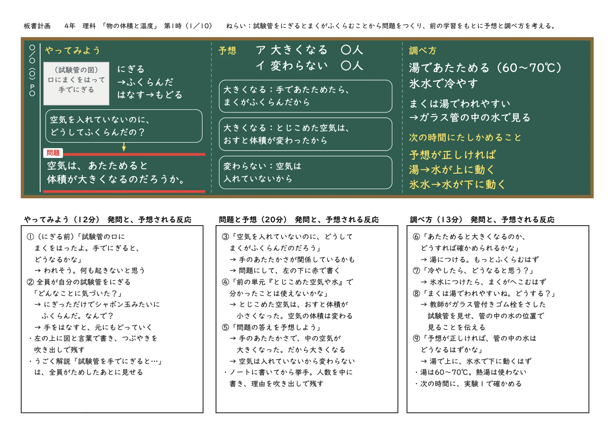
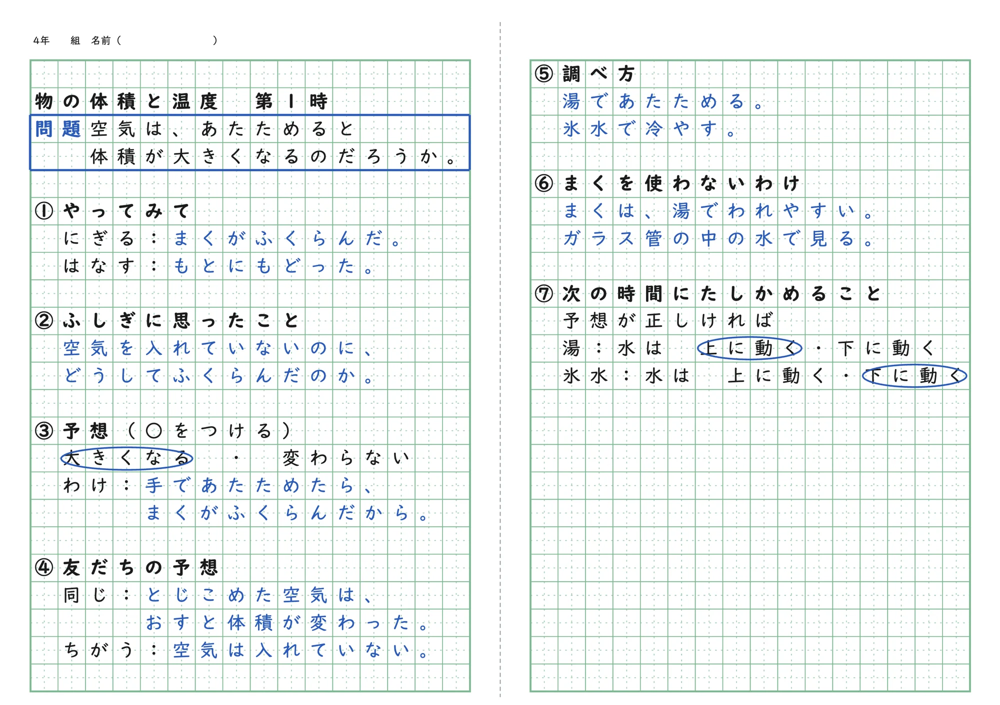
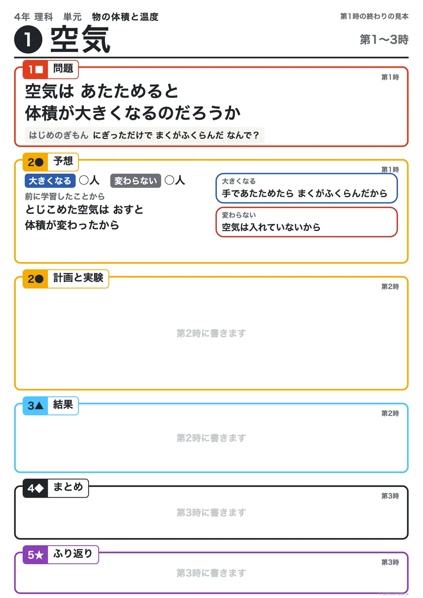

第1時 第１次 空気①
問題空気は、あたためると体積が大きくなるのだろうか
Board

Notebook

Aim
試験管をにぎるとまくがふくらむことについて、気づきや疑問を出し合う活動を通して、手のあたたかさとまくのふくらみを関係付けて「空気は、あたためると体積が大きくなるのだろうか」という問題を見いだし、前の単元の学習を基に予想することができる。
Assessment
| 観点 | 評価規準 | 方法 |
|---|---|---|
| 思考・判断・表現 | 手のあたたかさとまくのふくらみを関係付けて問題を見いだし、前の単元の学習を基に、根拠のある予想を表現している。 | ノート・発言 |
Flow
| 配時 | 学習活動 | 指導上の留意点 |
|---|---|---|
| 12分 | １ せっけん水のまくをはった試験管を、手でにぎる。 （１）全員が自分の試験管でためす。 （２）上向きと下向き、にぎったときとはなしたときをくらべる。 | 〇 全員が事象に出会えるように、一人1本の試験管を用意する。 〇 力ではなく温度に目を向けさせるために、にぎる時間を長くしたり、試験管を下に向けたりしてくらべさせる。 〇 試験管を落とさないように、机の中央で扱わせる。 |
| 20分 | ２ 気づきや疑問を出し合い、問題をつくって予想する。 | 〇 「空気を入れていないのに、どうしてふくらんだのか」という疑問を取り上げ、問題をつくる。 〇 根拠のある予想をさせるために、前の単元の「とじこめた空気はおし縮められる」を思い出させる。 〇 うごく解説「試験管を手でにぎると…」は、全員がためしたあとに見せる。 |
| 13分 | ３ 予想を確かめる調べ方を考える。 | 〇 手より熱い物と冷たい物で確かめるという考えを取り上げ、湯と氷水で調べる見通しをもたせる。 |
配時は45分の目安です。
Learning trail

More
空気は、あたためると体積が大きくなるのだろうか
うごく解説「試験管を手でにぎると…」。答えは出さず「どうしてふくらんだのかな」で止まる。全員が自分の手でためしたあとに見せる。
器具・準備
手順
結果の見通し にぎるとまくがふくらみ、手をはなすと元にもどっていく。
手であたためると、試験管の口のまくがふくらんだ。空気があたためられて、体積が大きくなったのではないかと予想した。湯と氷水を使って確かめる。
空気は、あたためると体積が大きくなるのだろうか（湯と氷水で確かめる）。
手のあたたかさと膜のふくらみを関係付け、「空気は、あたためると体積が大きくなるのだろうか」という問題を見いだす。 「空気には体積がある」という既習と関係付け、「あたためられて空気の体積が大きくなったのではないか」という根拠のある予想を発想し、表現している。